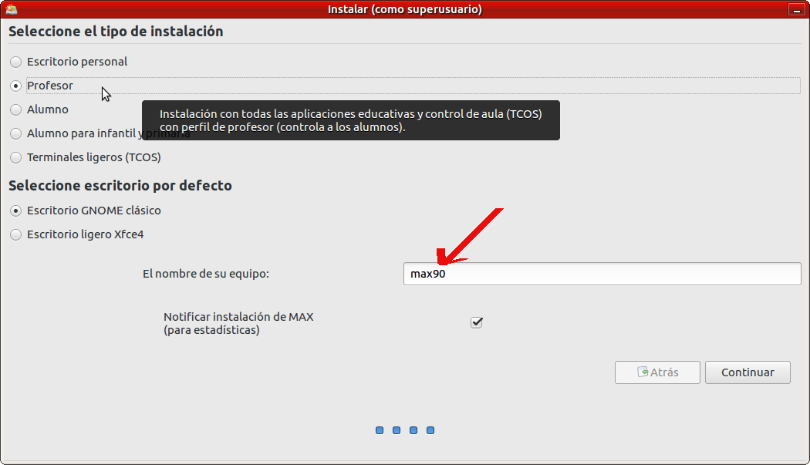

Nombre del equipo y grupo de trabajo
Al igual que lo que ocurría con las versiones precedentes de MAX, en las aulas de informática de los centros docentes, cuando se instala MAX en cada uno de los ordenadores, todos ellos llevan por defecto el mismo nombre de equipo. Para que los equipos del aula de informática puedan compartir recursos, es recomendable que cada uno de ellos tenga un nombre de equipo diferente y único en la red.
También es muy interesante agrupar los equipos en grupos de trabajo para facilitar la búsqueda de los recursos compartidos.
Cambio de nombre de equipo
Una primera oportunidad para cambiar el nombre del equipo es durante la instalación, en la última pantalla antes de iniciar la copia de los archivos al disco.
Si el nombre del equipo no se cambió durante la instalación, muy habitual, también existe la posibilidad de cambiarlo una vez que MAX ha sido instalado desde el menú de Sistema → Administración → Red (Se debe hacer estos cambios con el usuario administrador madrid).
Debe aparecer una ventana con varias pestañas donde se aprecia el nombre actual del equipo y un botón para Desbloquear la pantalla para poder cambiarlo.
Una vez modificado el nombre del equipo se aconseja salir de la sesión del usuario y volver a iniciarla para que este cambio sea efectivo. Es especialmente recomendable si se pretende seguir trabajando ya que algunas aplicaciones pudieran no funcionar correctamente.
Cambio del grupo de trabajo
Para cambiar el grupo de trabajo en MAX se debe acudir al menú Sistema → Administración → Carpetas compartidas
que pedirá la contraseña del administrador, usuario madrid, para desbloquear las opciones y hacer los cambios. En la ventana que aparece:
se selecciona la opción Configuración del Servidor... del menú Preferencias:

y nos aparecerá el cuadro de diálogo donde se aprecia el nombre del grupo de trabajo actual, AULAMAX, que se podrá cambiar por otro más acorde a las necesidades.
Hay que recordar que el cambio del nombre del grupo de trabajo se debe realizar en todos los equipos que se desee que aparezcan sus recursos agrupados.
En este punto se recomienda reiniciar el equipo para que se actualicen todas las configuraciones, o desde un terminal escribir:
sudo service nmbd restart
para que se actualice la configuración del nuevo grupo de trabajo.
Videotutorial
En el siguiente vídeo podemos ver cómo se cambia el nombre del equipo y el grupo de trabajo.